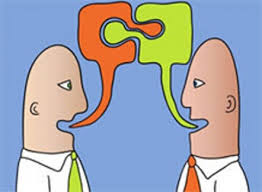

8 SIMPLE PRINCIPLE TO BUILD PEANCE IN YOUR COMMUNITY
If you switch on the TV news,open the newspaper or click onto a popular news website, there's always news about a terrorist attack,war,ongoing conflict and a general lack of peace amongst different groups people. in an increasingly globalised world,we should understand each other Better,stand over more united and strive for peace.Sadly,the truth is quite the opposite.there's conflict in israel/palestine/kashmir,Iraq ,Afganistán,Syria,all over the world in fact…
As individuals and citizens,how do we deal with this?How does this relate to us?How can we make positive chances to enable us to live in peace?
8 PRINCIPIOS SIMPLES PARA CONSTRUIR LA PAZ EN TU COMUNIDAD
haces clic en un sitio web de noticias popular, siempre hay noticias sobre un ataque terrorista, una guerra, un conflicto en curso y una falta general de paz entre diferentes grupos de personas. En un mundo cada vez más globalizado, debemos entendernos mejor, estar cada vez más unidos y luchar por la paz. Lamentablemente, la verdad es todo lo contrario. Hay conflictos en Israel/Palestina, Cachemira, Irak, Afganistán, Siria y, de hecho, en todo el mundo...
Como individuos y ciudadanos, ¿cómo afrontamos esto? ¿Cómo se relaciona esto con nosotros? ¿Cómo podemos hacer cambios positivos que nos permitan vivir en paz?

RULE #1:TREAT OTHERS THE WAY YOU WISH TO BE TREATED
The good old golden rule Samsung it all:Empathy,tolerance and peace.This principle teaches you to love yourself and love ofhers.it apans cultures and faiths and is a universal age old concept which can't fácil!
REGLA #1: TRATA A LOS DEMÁS COMO DESEAS SER TRATADO
buena y vieja regla de oro que lo abarca todo: empatía, tolerancia y paz. Este principio te enseña a amarte a ti mismo y a amar a los demás. Abarca culturas y religiones y es un concepto universal antiguo que no puede ser fácil.
PAST SIMPLE
-Sofia learned to treat others the way she wants to be treated.
PRES PERFECT
-They have heard the saying about treating others how they want to be treated
RULE #2:LISTEN TO HEAR WHAT OTHERS HAVE TO SAY, NOT TO SPEAK.

Engage in dialogue with an open mind and the real will to listen to others. Only then will you be able to understand each other and build bridges. Change cannot happen and peace cannot be established if people are unable to communicate with others; to listen to their experiences and views and show empathy, understanding and compassion.
REGLA #2: ESCUCHE PARA OÍR LO QUE LOS DEMÁS TIENEN QUE DECIR, NO PARA OÍR HABLAR.
Entablar un diálogo con la mente abierta y la verdadera voluntad de escuchar a los demás y tender puentes. El cambio no puede ocurrir y la paz no puede establecerse si las personas no pueden comunicarse con las demás; Escuchar sus experiencias y puntos de vista y mostrar empatía, comprensión y compasión.
PAST SIMPLE
- He always listens to what others have to say.
PRES PERFEC
-I have told my friend to listen to hear what others have to say, not to hear them talk.
RULE #3:ACCEPT DIFFERENCE OF OPINION.

We all have different opinions and we may not all agree on the same thing. Building compromise and mutual understanding is incredibly important. Sometimes we simply need to agree to disgregación and recognise that there are different beliefs and forms of expression other than our own.
REGLA #3: ACEPTAR LA DIFERENCIA DE OPINIÓN.
Todos tenemos opiniones diferentes y puede que no todos estemos de acuerdo en lo mismo. Lograr compromisos y comprensión mutua es increíblemente importante. A veces simplemente necesitamos aceptar la disgregación y reconocer que existen creencias y formas de expresión diferentes a las nuestras.
PAST SIMPLE
-My aunt taught me a saying that is to accept the difference of opinion.
PRES PERFEC
-I have applied to accept the difference of opinion.
RULE #4:DO NOT FIGHT VIOLENCE WITH VIOLENCE.

Violence is never the answer. Peace can only be brought through free will, dialogue, empathy and forgiveness. Do not stoop to same level as someone who is violent and therefore continue the vicious cycle. This does not change anything.
REGLA #4: NO COMBATIR LA VIOLENCIA CON VIOLENCIA
La violencia nunca es la respuesta. La paz sólo puede lograrse mediante el libre albedrío, el diálogo, la empatía y el perdón. No te rebajes al mismo nivel que alguien que es violento y, por lo tanto, continúas el círculo vicioso. Esto no cambia nada.
PAST SIMPLE
-In the morning I spoke that the center of non-violence rises the principle of love.
PRES PERFEC
-In the morning I spoke that the center of non-violence rises the principle of love.
RULE #5: ACCEPT THAT IDENTITY IS FLUID

Any one person can have multiple aspects to their identity. Identity comprises many elements such as nationality, cultural-linguistic origin, age and religious beliefs. Identity can and does change, taking on many new forms and means of personal expression as we learn new languages, move home, adopt new beliefs, marry into a different tradition and experience life! Do not put people into a box. Avoid categorising people according to an us vs. them narrative and remember: we are all singular individuals with unique experiences. Such approaches and narratives are highly divisive and unproductive.
REGLA #5: ACEPTAR QUE LA IDENTIDAD ES FLUIDA
Cualquier persona puede tener múltiples aspectos de su identidad. La identidad comprende muchos elementos como la nacionalidad, el origen cultural-lingüístico, la edad y las creencias religiosas. La identidad puede cambiar y de hecho cambia, adoptando muchas formas y medios nuevos de expresión personal a medida que aprendemos nuevos idiomas, nos mudamos a casa, adoptamos nuevas creencias, nos casamos con una tradición diferente y experimentamos la vida. No pongas a la gente en una caja. Evite categorizar a las personas según una narrativa de nosotros versus ellos y recuerde: todos somos individuos singulares con experiencias únicas. Tales enfoques y narrativas son altamente divisivos e improductivos.
PAST SIMPLE
– she watched a video about everyone’s identity and accepted that we are all different and unique.
PRES PERFEC
– she watched a video about everyone’s identity and accepted that we are all different and unique.
RULE #6: AVOID STEREOTYPES

Take people for the individuals they are. Avoid misconceptions, stereotypes and toxic narratives and get to know a person instead. This will avoid offence, misunderstandings and ultimately help you to create a real bond with others based on true understanding, empathy and trust. After all, no one likes to be judged – especially from the outsid
REGLA #6: EVITE LOS ESTEREOTIPOS
Tome a las personas por los individuos que son. Evite conceptos erróneos, estereotipos y narrativas tóxicas y, en su lugar, conozca a una persona. Esto evitará ofensas, malentendidos y, en última instancia, le ayudará a crear un vínculo real con los demás basado en la verdadera comprensión, empatía y confianza. Después de todo, a nadie le gusta que lo juzguen, especialmente desde fuera.
PAST SIMPLE
- Mary listened to concepts that help them create real connections with others in the morning.
PRES PERFEC
-the stereotypes have caused unequal and unfair treatment due to a person’s gender.
RULE #7: APPROACH THE MEDIA WITH SKEPTICISM

Don’t just believe everything you see on the TV, in the newspapers or on the internet. Think objectively for yourself. Get to know the people and facts behind any story and don’t fall for media scapegoating. Stand united
REGLA N° 7: ACÉRQUESE A LOS MEDIOS CON ESCEPTICISMO
No creas simplemente todo lo que ves en la televisión, en los periódicos o en Internet. Piensa objetivamente por ti mismo. Conozca a las personas y los hechos detrás de cualquier historia y no caiga en la trampa de los medios de comunicación. Manténganse unidos.
PAST SIMPLE
the media is used to give false information about people, it is good to know them more than offensive criticism.
PRES PERFEC
the communication has been used to make us believe that they truth about the facts but not only do they put us in unfavorable situations, it is good to know the people.
RULE #8: BE CAREFUL OF THE LANGUAGE YOU USE

Your choice of language, alongside tone of voice and intonation all convey a message. Make sure that that message is positive. Be mindful of the language you use, avoiding anything with misogynistic, racist, Islamophobic, homophobic or anti-Semitic overtones. Do not underestimate the power of language – for better or for worse! And remember, it’s not always what you say, it’s how you say it.
REGLA #8: TEN CUIDADO CON EL IDIOMA QUE UTILIZA
Su elección de idioma, junto con el tono de voz y la entonación, transmiten un mensaje. Asegúrate de que ese mensaje sea positivo. Sea consciente del lenguaje que utiliza y evite cualquier contenido que tenga connotaciones misóginas, racistas, islamófobas, homofóbicas o antisemitas. No subestimes el poder del lenguaje, ¡para bien o para mal! Y recuerda, no siempre es lo que dices, sino cómo lo dices.
PAST SIMPLE
Affirm- she used very gentle word when communicating with her director.
PRES PERFECT
They have seen important videos at work about how they should communicate with the people around thes